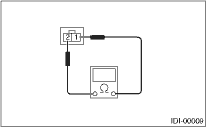

INSTRUMENTATION/DRIVER INFO > Ambient Sensor
INSPECTION
Measure the ambient temperature sensor resistance.

Terminals
Specified resistance
1 and 2
3 kΩ/25°C (77°F)
If NG, replace the ambient temperature sensor.